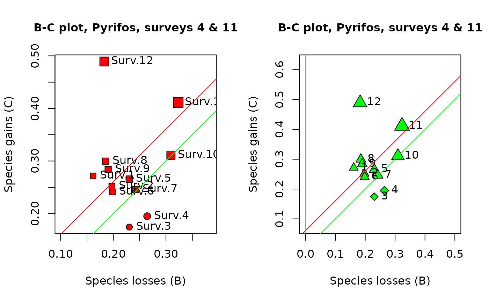
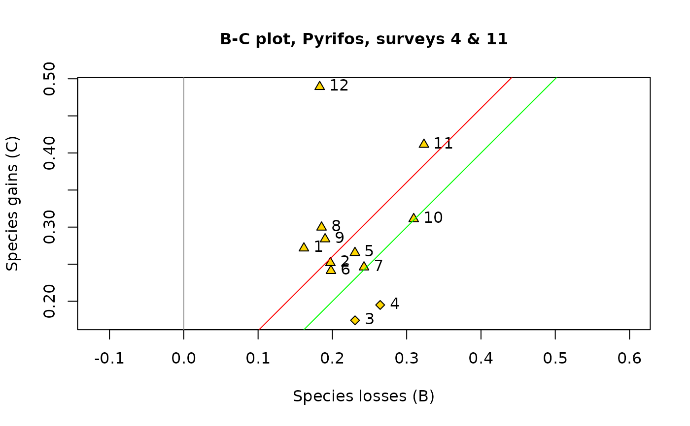
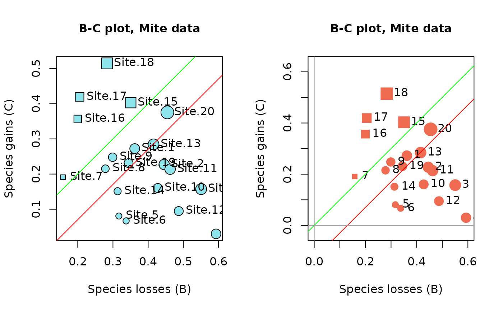

B-C plots are an important step in temporal beta diversity analysis. This function draws B-C plots from the output of function TBI. Different graphic options are available.
# S3 method for class 'TBI'
plot(
x,
type = "BC",
s.names = NULL,
pch.loss = 21,
pch.gain = 22,
cex.names = 1,
col.rim = "black",
col.bg = "gold1",
cex.symb = 3,
diam = TRUE,
main = "B-C plot",
cex.main = 1,
cex.lab = 1,
xlim = NULL,
ylim = NULL,
silent = TRUE,
...
)Output of a temporal beta diversity analysis with function TBI. The matrix BCD.mat will be extracted from that object. This matrix contains the B/den statistics in column 1 and the C/den statistics in column 2, where "den" is the denominator used in the TBI analysis.
Specify which outputs are plotted. At this time, only BC plots are implemented
a vector of names: Site names will be printed on the BC plot. Examples: s.names=1:25; s.names=paste("Site",1:25,sep="."); s.names=rownames(res1$BCD.mat). Else, s.names=NULL (default): no site names will be printed.
Symbol used for sites where losses > gains. Default: pch=21, circles. Symbols 21 to 25 have a black rim and can be filled with different colours (argument col.bg); see documentation of function points. Symbols 0 to 20 only have a rim.
Symbol used for sites where losses >= gains. Default: pch=21, squares.
Multiplier for the font size of the site names.
Colour of symbol rims in the plot. The following colours have been used
in BC plots: "gold","grey70","cadetblue2","red","orange3","coral2","grey100","green".
Colour filling symbols 21 to 25 in the plot.
Multiplier for size of the symbols representing the TBI values of the sites in the plot. With cex.symb=NULL, symbols have small and uniform sizes.
If TRUE, symbol diameter represents the TBI value. If FALSE,
symbol surface area represents the TBI value.
Main title above the plot. Change the title and adapt it to your study.
Multiplier for the font size of the main title.
Multiplier for the font size of the labels.
The x limits of the plot, e.g. c(0,1).
The y limits of the plot, e.g. c(0,1).
If FALSE print intercept of red line with ordinate.
Other arguments to be passed to the function
A graph in the R graphic window, with the same scale along the 2 axes (asp=1).
B-C plots are an informative output of temporal beta diversity analysis. The species losses (B statistics) form the abscissa and the gains (C statistics) are on the ordinate of the plot. The objective is to illustrate whether the temporal changes at the various sites are dominated by gains or by losses. Distinctive symbols are used for the sites dominated by gains (default: squares) and by losses (default: circles). The symbols are drawn to sizes representing the values of the D = (B+C) statistics.
Legendre, P. 2019. A temporal beta-diversity index to identify sites that have changed in exceptional ways in space-time surveys. Ecology and Evolution (in press).
van den Brink, P. J. & C. J. F. ter Braak. 1999. Principal response curves: analysis of time-dependent multivariate responses of biological community to stress. Environmental Toxicology and Chemistry 18: 138-148.
if(require("vegan", quietly = TRUE)) {
## Example 1 -
## Invertebrate communities subjected to insecticide treatment.
## As an example in their paper on Principal Response Curves (PRC method), van den
## Brink & ter Braak (1999) used observations on the abundances of 178 invertebrate
## species (macroinvertebrates and zooplankton) subjected to treatments in 12 mesocosms
## by the insecticide chlorpyrifos. The mesocosms were sampled at 11 occasions. The
## data, available in the {vegan} package, are log-transformed species abundances,
## ytranformed = loge(10*y+1).
## The data of survey #4 will be compared to those of survey #11 in this example.
## Survey #4 was carried out one week after the insecticide treatment, whereas the
## fauna of the mesocosms was considered by the authors to have fully recovered from
## the insecticide treatment at survey #11.
data(pyrifos)
## The mesocosms had originally been attributed at random to the treatments. However,
## to facilitate presentation of the results, they will be listed here in order of
## increased insecticide doses: {0, 0, 0, 0, 0.1, 0.1, 0.9, 0.9, 6, 6, 44, 44}
## micro g/L.
## Select the 12 data rows of surveys 4 and 11 from the data file and reorder them
ord4 <- c(38,39,41,47,37,44,40,46,43,48,42,45)
ord11 <- c(122,123,125,131,121,128,124,130,127,132,126,129)
## Run the TBI function
res1 <- TBI(pyrifos[ord4,], pyrifos[ord11,], method = "%diff", nperm = 0, test.t.perm = FALSE)
res1$BCD.mat
## Draw BC plots
oldpar <- par(mfrow=c(1,2))
s.names <- paste("Surv",1:12,sep=".")
## In the 1st plot, the symbols have diameters proportional to the site TBI statistics
plot(res1, s.names=s.names, col.bg="red", pch.loss=21, pch.gain=22,
main="B-C plot, Pyrifos, surveys 4 & 11")
## In the 2nd plot, control the axes limit values by specifying xlim and ylim
plot(res1, s.names=1:12, col.bg="green", pch.loss=23, pch.gain=24,
main="B-C plot, Pyrifos, surveys 4 & 11", xlim=c(0,0.5), ylim=c(0.1,0.6))
## In the 3rd plot, draw all symbols small and of the same size, using cex.symb=NULL
par(oldpar)
plot(res1, s.names=1:12, col.bg="gold", pch.loss=23, pch.gain=24,
main="B-C plot, Pyrifos, surveys 4 & 11", cex.symb=NULL)
## Example 2 -
## This example uses the mite data available in vegan. Let us pretend that sites 1-20
## represent a survey at time 1 (T1) and sites 21-40 a survey at time 2 (T2).
data(mite)
## Run the TBI function
res2 <- TBI(mite[1:20,],mite[21:40,],method="%diff",nperm=0,test.t.perm=FALSE)
res2$BCD.mat
## Draw BC plots
oldpar <- par(mfrow=c(1,2))
s.names=rownames(res2$BCD.mat)
## In the 1st plot, the symbols have diameters proportional to the site TBI statistics
plot(res2, s.names=s.names, col.bg="cadetblue2", pch.loss=21, pch.gain=22,
main="B-C plot, Mite data")
# In the 2nd plot, control the axes limit values by specifying xlim and ylim
plot(res2, s.names=1:20, col.rim="coral2", pch.loss=19, pch.gain=15,
main="B-C plot, Mite data", xlim=c(0,0.6), ylim=c(0,0.6))
par(oldpar)
}


